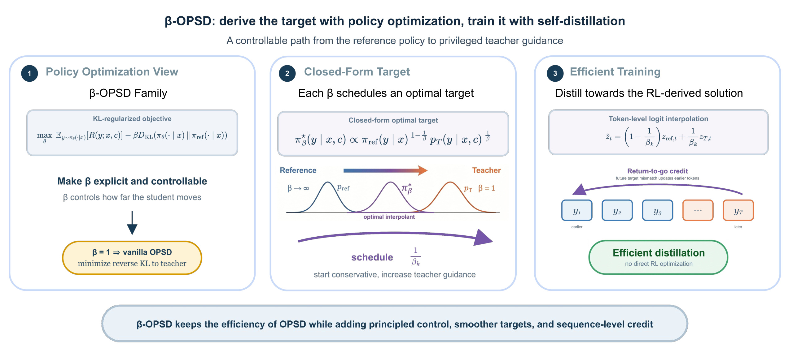
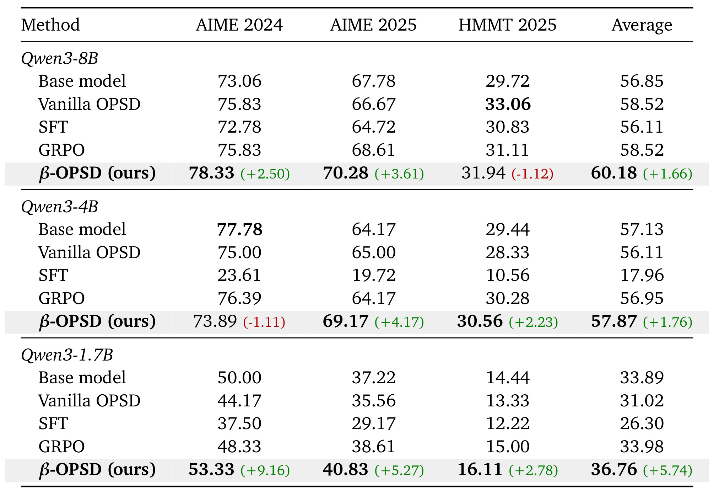
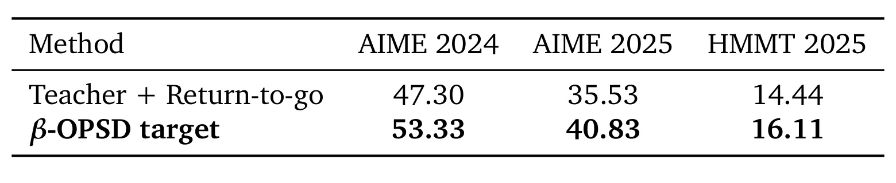
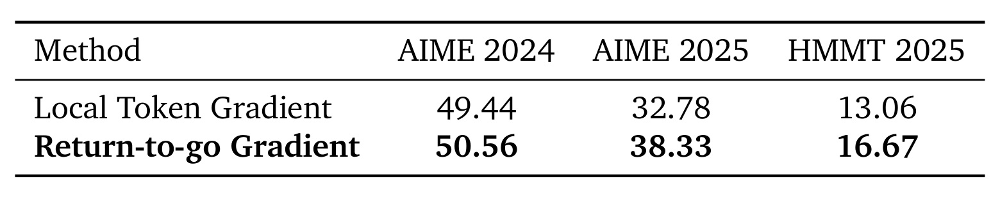
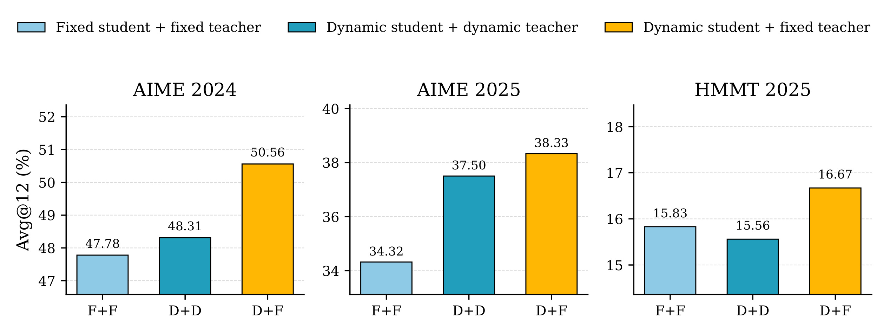
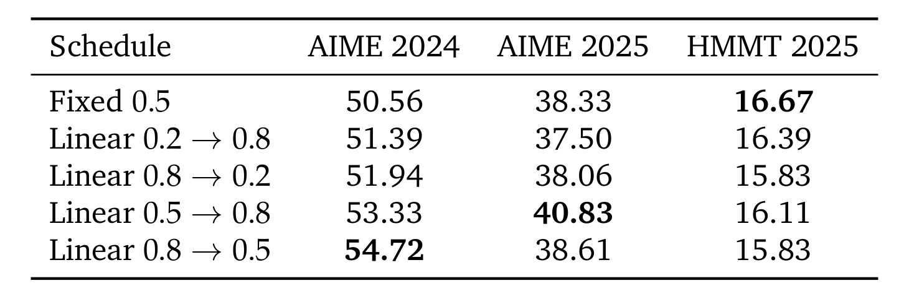
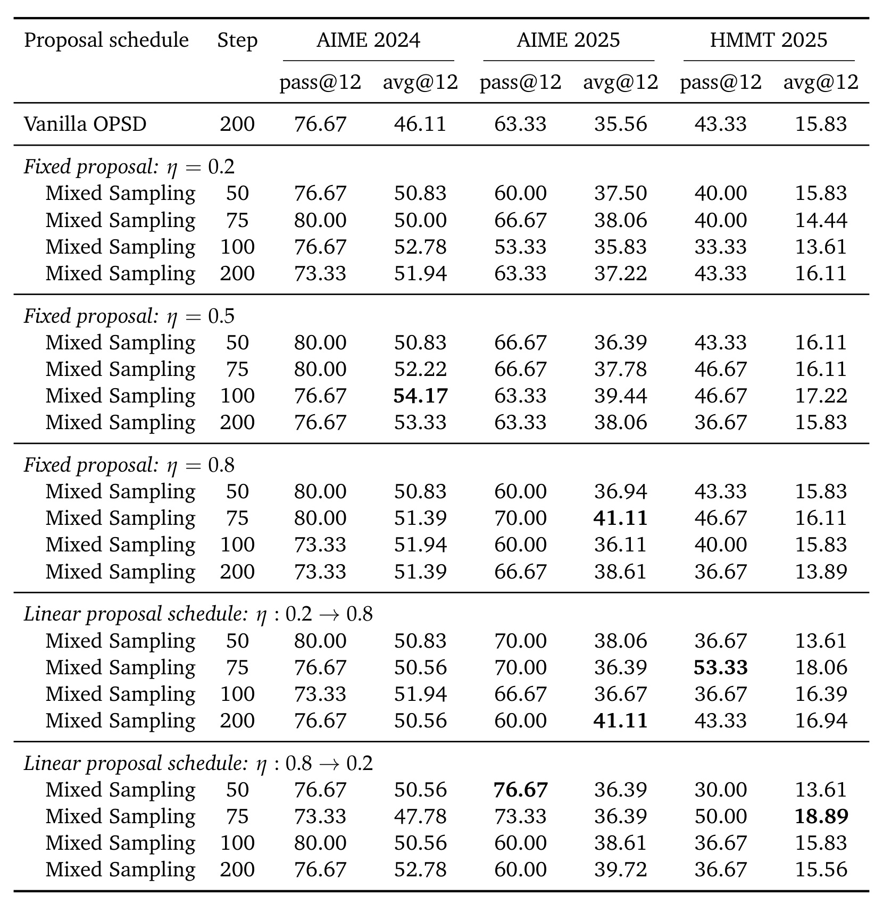

β-OPSD：从策略优化推导、用自蒸馏训练
英文题目： β-OPSD: Deriving with Policy Optimization, Training with Self-Distillation。论文由马里兰大学帕克分校的 Jiawei Xu、Minghui Liu、Juzheng Zhang、Tom Goldstein 与 Furong Huang 完成，于 2026 年 7 月 30 日以 arXiv v1 公开。这项工作不是又发明一个独立的后训练套件，而是先重新解释 on-policy self-distillation（OPSD）：它可以被看成一族 KL 正则的策略优化问题，然后再把该问题的闭式最优解变成便宜的 token-level 蒸馏目标。论文入口为 arXiv:2607.28582；摘要页与论文首页未核验到独立代码仓库或项目页。
On-policy 自蒸馏虽然能让教师回应学生自己访问到的推理状态，但 vanilla OPSD 把学生直接拉向 privileged teacher，又没有显式的 reference 约束强度，因而目标跨度大、训练容易脆弱。同时，逐 token 的局部 KL 更新看不到早期决策对后续整条推理轨迹的影响。
1. 背景和问题
推理模型的后训练一端是结果奖励驱动的 RL，另一端是教师给出密集 token 分布的蒸馏。OPSD 试图结合两者的优点：学生不在一份固定教师数据上学习，而是从当前策略采样完整推理轨迹；教师再在学生真正经过的 prefix 上提供下一 token 分布。“教师”可以是同一个模型的 privileged branch，训练时额外看到标准解、已验证推理轨迹或外部反馈；学生则只能看到问题。这种设定缓解了 offline distillation 的 exposure bias：教师监督的是学生访问到的状态，而不是理想教师轨迹上的状态。
困难在于，直接对 privileged teacher 做 reverse KL，会把教师当成唯一正确终点。当学生和教师在学生自己的 prefix 上相差较大时，这等价于每一步都要把学生猛拉向另一个分布，没有一个参数回答“此时应当相信教师多少、保持在原策略附近多少”。论文识别出的结构性事实是：vanilla OPSD 并非没有 reference regularization，而是把它的系数隐式固定在 β=1。因而，方法脆弱不只是“工程参数没调好”，还是原目标没有暴露控制 student-reference 距离的自由度。
第二个问题是信用分配。语言模型的第 (t) 个 token 不是一次孤立分类：它改变了后续所有 prefix，也改变了学生和 target 在未来步上的不匹配。局部 token-KL 只用当前 token 的 log-ratio 加权当前 log-probability，它看不到“一个早期转弯导致之后十几步全部偏离”。数学推理尤其放大这一点：轨迹通常较长，中间符号、算法选择和案例分支具有连锁效应；最终答案正确也不意味每个局部选择都好，反之一次早期错误可能让整条轨迹失去教师支持。
两个问题的共同根源是，常见 OPSD 将“应当追踪哪个分布”和“哪些 token 应对未来误差负责”混在一个局部 KL 里。训练失稳时，很难判断究竟是 teacher 目标离 student 太远，还是梯度没有把后续代价传给早期决策。β-OPSD 把二者拆开：β和几何插值只负责选 target，return-to-go 只负责沿轨迹分配不匹配信号。因此后续两组消融才能分别回答“平滑 target 是否有效”与“未来归因是否有效”，而不只是比较两个复合 recipe。
本文的奖励也不是只在答案结尾给 0/1 分数，而是 teacher 与 reference 对整条轨迹的对数概率比。这使作者能推出闭式 target，也带来明确限制：teacher 必须在学生生成的每个 prefix 上给出可比较的 token 概率。若只有最终奖励，或教师 API 不返回 logits，这条从策略优化回到蒸馏的路径就不能原样复制。这一依赖也是后文判断方法外推范围的前提。另一方面，两条轨迹在最终答案上同样正确，中间的 teacher/reference 对数比仍可能完全不同；所以该目标真正学习的是整条推理分布，不是对结果奖励做一次稀疏回传。这正是数学长推理能检验本文机制、却也限制其直接泛化的原因。
论文的问题因此可以分成两层：首先，能否从一个可解释的策略优化目标推出“学生应当追哪个分布”，而不再无条件追教师？其次，能否不真正跑高方差 RL，而是用 OPSD 的便宜 token-level 计算去近似该最优解，同时把未来不匹配传回早期 token？β-OPSD 的两个实用部件——scheduled logit interpolant 与 return-to-go——分别回答这两层问题。
2. 方法
2.1 Vanilla OPSD 是β=1的策略优化
论文从标准 KL 正则策略优化出发。对 prompt (x) 和只在训练可见的 privileged context (c)，学生策略为 (π_\theta)，参考策略为 (π_{\mathrm{ref}})。目标在获得轨迹奖励与不偏离 reference 之间折中：
符号解释：(y) 是学生自己采样的完整推理轨迹；(R(y;x,c)) 是轨迹级奖励；(D_{\mathrm{KL}}) 衡量学生到 reference 的偏离；(β>0) 是这个偏离的惩罚系数。β 越大，策略更保守，不是教师信号更强。这一方向性是理解后续 schedule 的关键。作者将奖励特化为 privileged teacher (p_T) 与 reference 对同一轨迹的对数似然比：
符号解释：(p_T(y\mid x,c)) 是能看到标准解等 (c) 的教师对轨迹的概率；(π_{\mathrm{ref}}(y\mid x)) 是参考策略概率。当某条轨迹相对 reference 更被 teacher 偏好时，这个奖励更高。将它代回上式且取 (β=1)，reference 的对数项正好抵消，剩下：
符号解释：(J_1) 是 (β=1) 时的策略优化目标；右边是 vanilla OPSD 的序列级 reverse KL。更一般地，该目标可重写为学生到 teacher 的 reverse KL，再加上权重 (β-1) 的 student-reference KL。因此 (β=1) 不是一个无关紧要的默认值，而是完全去掉额外 reference 锚定的特殊端点。
2.2 可变β定义几何目标路径
在 student、reference 和 teacher 的 support 相容时，固定 (β) 的目标有闭式最优策略：
符号解释：(π_β^) 是该 KL 正则目标的轨迹级最优策略；(Z_β(x,c)) 对所有可能生成轨迹求和以归一化；reference 的指数是 (1-1/β)，teacher 的指数是 (1/β)。它不是概率算术平均，而是几何插值：(β=1) 时 target 就是 teacher；(β\to\infty) 时 target 回到 reference。证明的核心是把原目标重写为 (-β D_{\mathrm{KL}}(π\Vertπ_β^)+β\log Z_β)，利用 KL 非负性得到最优解。实际训练不必固定一个 (β)。论文直接调度 teacher weight (w_k=1/β_k)，并将其限制在 ([0,1])，默认用有界线性路径：
符号解释：(k) 是当前优化步，(K) 是总训练步数，(w_{\mathrm{start}}) 和 (w_{\mathrm{end}}) 是教师权重的起终点。若 (w_{\mathrm{start}}<w_{\mathrm{end}})，则早期更接近 reference，后期逐步接近 teacher。这里调度的不是采样温度，而是“每一步应当追踪哪个最优 target”。线性 schedule 是论文检验的一种实现，不是理论要求；β 的价值在于暴露了这条可调路径。
2.3 从闭式最优策略回到可计算的自蒸馏
轨迹级 (π_β^*) 的形式虽然清楚，但 (Z_β) 要遍历所有可能完成文本，无法在大词表自回归模型上直接计算。β-OPSD 在每个 prefix (h_t=(x,y_{<t})) 上做局部近似：取 reference/student-side logits (z_{\mathrm{ref}}) 和 privileged teacher logits (z_T)，先线性混合 logits，再 softmax。
符号解释：(h_t) 是已经生成到 (t-1) 步的历史；(z_{\mathrm{ref}}) 和 (z_T) 是在相同 prefix 上的两个词表 logit 向量；(β_k) 决定两端权重；(~ p_{β_k}) 是本步可计算 target。logit 的线性插值等价于局部概率的归一化几何插值，所以它保留了闭式解的形状，但它在每个 prefix 分别归一化，仍只是序列级最优解的局部近似。

Figure 1 将论文的两次“视角切换”画得很清楚。左列不是训练实现，而是解释层：先用 KL 正则策略优化让β显式可控，并识别 (β=1) 正好回到 vanilla OPSD。中列是数学桥梁：reference 和 teacher 的几何插值给出一整条最优 target 路径，(1/β_k) 从小到大表示从保守迁移到更强教师指导。右列才是实际优化：局部 logit mixing 代替不可计算的轨迹归一化，return-to-go 箭头则把后续 target mismatch 逆着时间归因给早期 token。图底部“no direct RL optimization”是本文工程价值的核心：RL 用来推出应当去哪里，蒸馏用来低方差地走过去。学生真正最小化的仍是 reverse KL，只是固定 teacher 换成了调度插值 target：
符号解释：(ℒ_{β_k}) 是第 (k) 步的序列级蒸馏目标；(π_θ) 是学生完整轨迹分布；(~ p_{β_k}) 是每个 prefix 局部归一化后相乘得到的自回归 target。为了构造逐 token 权重，作者定义：
符号解释：(ρ_t^{β_k}) 是轨迹 (y) 在第 (t) 步的 student-target 对数比；(y_t) 是学生已采样 token，(y_{<t}) 是其 prefix。求和 (∑_tρ_t) 是序列 reverse KL 的 Monte Carlo 估计，但只用当前 (ρ_t) 训当前 token 仍是局部、短视的。
2.4 Return-to-go 将序列级不匹配传回早期 token
β-OPSD 每次更新先从当前学生 on-policy 采样 (y\simπ_θ)，再在该轨迹的每个 prefix 上算插值 target 和 (ρ_t)。它不用瞬时 (ρ_t) 作当前 token 的全部权重，而是把未来的不匹配折扣累加：
符号解释：(G_{t,γ}^{β_k}) 是第 (t) 个 token 的 return-to-go；(s) 遍历当前及之后位置；(T) 是轨迹长度；(γ) 控制远期 mismatch 衰减。当 (γ=1) 时，论文在附录证明该 estimator 的期望等于序列 reverse-KL 真实梯度：通过 score-function identity 展开后，过去的 (ρ_s,s<t) 在条件期望下因 score 均值为零而消失，只留当前和未来项。实验用 (γ=0.99)，这是控制长轨迹权重幅度与方差的有偏实用近似，不应与 (γ=1) 的严格无偏性混为一谈。实际 surrogate loss 为：
符号解释：(ℒ_β) 是对一条轨迹的可微 surrogate；(1/T) 做长度归一化；(operatorname{sg}) 表示 stop-gradient；梯度只穿过 (logπ_θ)。插值 logits、teacher branch 和 return-to-go 权重都被 detach，所以这个算法在优化器眼中仍是带定值 token 权重的学生 log-probability 训练，而不是需要额外 critic 或 advantage model 的 RL。
训练与推理的差别必须说清：训练时，学生只看问题 (x) 并生成轨迹，privileged teacher 另外看到标准解 (c)，在同一批学生 prefix 上产生 logits；stop-gradient 的当前 student 与固定 teacher 插值成 target，再根据整条轨迹的 (ρ) 算 RTG。推理时，privileged context、teacher logits、β schedule、ρ 和 RTG 全部消失，只部署更新后的 student 做普通自回归解码。因此该方法增加的成本主要在训练，不是在线推理服务。
3. 实验结果
3.1 数学推理设定与评估口径
训练采用 Qwen3-1.7B、Qwen3-4B 和 Qwen3-8B instruct 模型，数据是 OpenThoughts 的数学推理子集。每个样本包含问题 (x) 与标准解，学生只依赖 (x) 生成，teacher branch 把标准解作为 privileged context (c)。评估集为 AIME 2024、AIME 2025 和 HMMT 2025，都要求多步竞赛数学推理。主表使用默认 200 步训练计划中的 100-step checkpoint；每道题随机生成 12 个候选，温度 0.6、top-p 0.95、top-k 50。Avg@12 是 12 次生成的平均正确率，pass@12 则是至少一个候选正确的题目比例；两者在论文中都乘 100 报告为百分点。
主实现的 teacher weight 为 (w_{\mathrm{start}}=0.5,w_{\mathrm{end}}=0.8)，总步数 (K=200)，RTG 折扣 (γ=0.99)。训练使用 LoRA，附录给出 rank 64、scaling 128、学习率 (5\times10^{-6})、梯度范数裁剪 0.1。Qwen3-1.7B 的详细配置是 4 张 RTX A6000、有效 batch size 32，生成最大 completion 长度 1024 token；论文也说明全部实验使用 A6000 或 H200。对照包括 base model、SFT、vanilla OPSD 和 GRPO。共用训练数据、预算和评估口径使主比较基本针对目标函数，但每个结果仍只是单篇论文的竞赛数学证据，不能直接外推到开放问答或工具使用。
3.2 主结果：小模型收益最大，大模型仍有平均优势

Table 1 要按模型规模和单个 benchmark 分开读。Qwen3-1.7B 的改善最明显：vanilla OPSD 在 AIME 2024/2025、HMMT 2025 分别为 44.17、35.56、13.33，β-OPSD 提高到 53.33、40.83、16.11，绝对增益为 9.16、5.27、2.78，平均分从 31.02 升到 36.76。该 36.76 也高于 base model 的 33.89 和 GRPO 的 33.98，说明改善并不只是“修复 vanilla OPSD 退化”。4B 和 8B 的平均收益较小但仍为正：分别从 56.11 到 57.87（+1.76）、从 58.52 到 60.18（+1.66）。这与“小学生与 privileged teacher 分布差距更大，因而平滑 target 更有价值”的解释一致，但论文没有直接测量分布差距，所以这仍是有实验支持的解释，不是被单独证明的因果链。
同时，表格不支持“每个数据集都更好”的强说法：4B 在 AIME 2024 比 vanilla OPSD 低 1.11 点，8B 在 HMMT 2025 低 1.12 点。因此更稳妥的结论是β-OPSD 在三种规模的 benchmark 平均上都优于 vanilla OPSD，而非逐数据集统治。另一个需要警惕的异常是 4B SFT 的平均分只有 17.96，远低于其他规模与 4B base。论文表格给出了这些数值，但没有详细诊断该 SFT 退化；它不会影响β-OPSD 对 vanilla OPSD 的同类比较，却限制了“全面优于 SFT”的解释力。
3.3 插值目标和 return-to-go 的独立贡献
第一组消融固定信用分配为同一种 RTG，只改变 target：一组直接追 privileged teacher，另一组追 (w_{\mathrm{start}}=0.5\to w_{\mathrm{end}}=0.8) 的β-OPSD target。这个对照排除了“全部收益只来自 RTG”。

Table 2 中，direct teacher + RTG 在 AIME 2024/2025、HMMT 2025 上的 Avg@12 为 47.30、35.53、14.44，换成β-OPSD target 后为 53.33、40.83、16.11，分别提升 6.03、5.30、1.67 点。由于两组使用相同 student on-policy 轨迹与 RTG estimator，这组差值直接指向目标分布：继续把 teacher 当唯一终点，即使有未来信用分配，仍不如沿 reference-to-teacher 路径逐步移动。三个数据集都为正也比主表中个别负收益更整齐，但这一消融只在 1.7B 上进行，不能假定相同差值会按比例复制到 8B。
第二组消融则固定 target 为同一个 (w_k=1/β_k=0.5) 插值分布，只将瞬时 local token gradient 换成 return-to-go gradient。

Table 3 显示，local token gradient 在三个 benchmark 上为 49.44、32.78、13.06，RTG 为 50.56、38.33、16.67，分别提升 1.12、5.55、3.61 点。AIME 2025 和 HMMT 2025 收益明显大于 AIME 2024，说明局部梯度丢失的信号对不同题目分布并不等量。两张表合起来形成一个比较干净的组件归因：Table 2 在同一 RTG 下证明插值 target 有额外价值，Table 3 在同一 target 下证明 RTG 有额外价值。它们还不是全因子互作用实验，但已经足以否定“只需其中一个部件”的简化解释。RTG 改变的是同一轨迹上梯度权重的时间传播，而不是采样数据或 target logits，因而这组改善与序列级推导直接对应。
3.4 Reference 端点与β日程
插值还有两个实现选择：student-side endpoint 是初始模型还是当前 student，teacher-side endpoint 是固定初始 privileged branch 还是随学生一起更新。论文比较 fixed student + fixed teacher（F+F）、dynamic student + dynamic teacher（D+D）和默认 dynamic student + fixed teacher（D+F）。三者都用 (w=0.5) 和相同 RTG，所以只检验 endpoint 的动态性。

Figure 2 的黄色 D+F 在 AIME 2024/2025、HMMT 2025 分别达到 50.56、38.33、16.67，三个子图都高于 F+F 与 D+D。这个组合的直观是：student-side target 随当前策略移动，可以减小学生与 target 的局部距离；teacher-side 保持固定，又避免监督锚点随学生一起漂移。数据也显示“dynamic teacher 能持续自我改进”不是当然成立：D+D 在 AIME 2025 比 F+F 好，在 HMMT 2025 却更低。阅读柱高时要注意三张子图的 y 轴范围不同，不能用柱的视觉高度跨 benchmark 比较效果量；应直接读数字。
endpoint 定下后，作者再比较 teacher weight (w=1/β) 的时间路径，包括固定 0.5、0.2→0.8、0.8→0.2、0.5→0.8 和 0.8→0.5。

Table 4 没有给出一个对所有数据集普遍最优的 schedule。AIME 2024 最高是 0.8→0.5 的 54.72，AIME 2025 最高是 0.5→0.8 的 40.83，HMMT 2025 最高反而是固定 0.5 的 16.67。作者选择 0.5→0.8 作为默认，因为它在这组 benchmark 上的整体表现最强，但这不能推成“先保守后贴近 teacher 永远最好”。反向 0.8→0.5 在 AIME 2024 更高，表明不同题目分布、模型规模和训练预算可能需要不同的教师指导时序。β将这一选择变得可见、可实验，却没有自动解决 schedule selection。因而新任务不应直接照搬默认端点，复现报告至少应给出多组日程或β敏感性，避免把新暴露的自由度再固定成未验证常数。
3.5 混合采样、计算代价与外推边界
主方法一直从 student on-policy 采样，只改 target。附录还测了更激进的 guided rollout：生成时就在 student 和 privileged teacher 的概率间做 proposal mixture：
符号解释：(m_{\bar\theta,η}) 是 stop-gradient student 与 teacher 的采样 proposal；(η=0) 是纯 student on-policy，(η=1) 是纯 teacher sampling；(h_t) 为当前 prefix。但主目标仍定义在 student 轨迹分布上，从 (m) 采样会引入 off-policy mismatch，所以需要 per-decision importance sampling：
符号解释：(w_t) 是当前 token 的 student/proposal 概率比，(W_t) 是从序列开始到 (t) 的累积比率。它被乘进后续 RTG 以纠正采样分布。长序列上累乘权重本身容易增加方差，而每个解码步都要合并两个模型分布，标准 vLLM pipeline 也不直接支持。论文因此称实现复杂度和生成开销接近翻倍。

Table 6 展示混合采样不是无效，而是“有收益但不稳定统治”。与 200-step vanilla OPSD 基线相比，各 checkpoint 中观察到的最大 Avg@12 改善为 AIME 2024 +8.06（(η=0.5), step 100 的 54.17 对 46.11）、AIME 2025 +5.55（例如 (η=0.8), step 75 的 41.11 对 35.56）、HMMT 2025 +3.06（(η:0.8→0.2), step 75 的 18.89 对 15.83）。但这三个最好数分散在不同 (η)、日程和 checkpoint，没有一条 proposal schedule 在三个 benchmark 都最优。有些组合还会降低单项，如固定 (η=0.8), step 200 的 HMMT Avg@12 只有 13.89。
这张表与主表的 checkpoint 口径不同，不应把两表数字直接拼成一个方法排名。它的用途是评估一个替代采样路线：guided proposal 确实可以把轨迹也往 teacher 方向拉，但它同时带来双模型解码、重要性权重方差和更强 schedule 敏感性。主方法只在 target 上插值、保留 student on-policy sampling，是一个经实验支持的复杂度取舍，而不是作者没有考虑更强的 teacher-guided rollout。
4. 总结
4.1 我的判断
β-OPSD 最有价值的不是“多了一个超参数”，而是把 vanilla OPSD 隐含的目标选择暴露为一条可控的最优策略路径。它的理论链条相对紧凑：teacher/reference log-ratio 奖励与 KL 正则目标在 (β=1) 时正好等价于 vanilla reverse KL；一般 (β) 的最优解是 reference-teacher 几何插值；局部 logit mixing 把这个轨迹级解近似为可计算 target；RTG 再修正局部信用分配。工程上的优点是不需要 critic，推理时也不保留 teacher。
实验证据对两个组件的支持比较好：主表在三个模型规模的平均分上都优于 vanilla OPSD，Table 2 和 Table 3 分别控制了 RTG 与 target，避免把全部改善归给同一个机制。但结论应限定为“竞赛数学上的 Avg@12 和优化稳定性改善”；主表仍有两个单项负收益，schedule 也没有跨 benchmark 的统治解。
4.2 复现关键与局限
复现时应先保证公平口径：主表是 100-step checkpoint 的 Avg@12，teacher/reference endpoint 必须区分 dynamic student 和 fixed teacher，logit interpolant 与 RTG 都要 detach，(γ=0.99) 不应被宣称为严格无偏。还应记录每步 student-target KL、RTG 权重分布和不同轨迹长度的梯度范数；仅看最终正确率，无法判断稳定性是来自目标差距缩小还是某些训练轨迹被抑制。
本文至少有四个边界。
- 任务外推有限。 证据只来自 AIME/HMMT 竞赛数学，开放式写作、对话、代码、工具使用的 target mismatch 形态和轨迹奖励不同。
- Teacher logits 是硬依赖。 局部几何插值需要完整词表 logits，闭源 API 教师通常不提供；teacher 与 student 的 tokenizer/support 不一致也会破坏直接混合。
- Privileged context 的质量会传导。 标准解、verifier 或反馈若有错，teacher 会在学生 prefix 上给出系统性偏差；β只能控制贴近它的速度，不能辨别教师是否正确。
- 日程与长程方差未被解决。 线性 0.5→0.8 不在每个 benchmark 都最优，(γ<1) 为了稳定引入偏差，(γ=1) 又可能让长轨迹 RTG 幅度过大。
4.3 后续跟进
- 跟踪自适应β。 用实测 student-target KL、梯度范数或验证集趋势控制 (w_k)，检验是否能比固定线性路径更稳定，且避免每个 benchmark 重新搜 schedule。
- 跟踪低方差 RTG。 尝试 baseline、advantage normalization、截断或 learned value control variate，同时保留与序列 reverse-KL 梯度的可解释关系。
- 跟踪数学之外的 privileged context。 优先测试可自动验证的代码执行、工具调用和结构化检索轨迹，因为这些任务同时具有长程信用分配和可构造 privileged feedback。
综合来看，β-OPSD 提供了一个很有用的研究角度：自蒸馏 target 不必是一个固定 teacher，而可以是由策略优化推出、随训练进度变化的分布路径。它将“目标选择”与“信用分配”分开建模，再用消融分开验证，这比只报一个最终准确率更有可迁移性。真正的下一步不是默认复制 0.5→0.8，而是弄清什么信号应当驱动β，以及如何在更长、更噪声的轨迹上实现更低方差的未来归因。